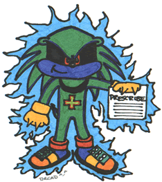

MENU >> Interact >> Have a question about Sonic? Send it to Dr. Dre(ad) >>Exclusive Movies - Poll-tastic! - Petitions Pageant - Sonic World League - Ask Dr. Dre(ad) |
Oooh, who's a popular little doctor today then? Ugh.... let's get these bombardments out of the way then shall we?
-If a clue hints to opening some safes, then you'll need to use the switches located on the very top floor. To get to the top floor quickly, from where you start the level go straight ahead, destroy the GUN car, and head left. There will be a hint box, with a big box behind it. Climb onto the big box and there'll be a spring. Hit that to go high up, then use the pulley to bring you up to top floor.
If it is problems with hints that you want, don't hesitate to e-mail me again - as a complete guide to Sonic Adventure 2 will appear at the Sonic Stadium very soon, I can only give you general level info for now. In the guide you will find the 9 most popular hints in each Knuckles/Rouge level among most things, so watch out for that.
1. Is there a way to make the screen smaller so the graphics show up better...
Last Month's questions...
Keep your questions coming in, I love answering them. No, honest, I reeeeeeeeaaaaaallly do.... Is that the end of my shift? Thank god! You can now point whatever Sonic Adventure 2 questions you may have to Dr. Dre(ad).
... Sonic Adventure 2 questions? Wait a minute, this wasn't in my contract!

Yes, welcome again to my surgery. I am of course, the infamous Doctor Dre(ad), and no, I am not a rap star!!! *Gasp* Sorry, it's time for my sanity pills. Now, let the doctor check up on your Sonic problem. Remember, this can be ANY Sonic question at all, it can be from the cartoons, the comics, the games (although the games are the most popular around here) or even about Sonic and his pal's background or whatever. WHATEVER you want to ask about Sonic, I am here for you. Or rather, forced here for you, bread and water is hardly the wage of a doctor. Well anyway, talk to me and I'll help, OK? Just e-mail me or send a message via the form using the links at the bottom of the page. Cheerio!Ask Dr. Dre(ad)
*Dr. Dre(ad)*
Q: Can I ask u some questions:
1)Is this site American?
2)How old are u?
From Ben
A: 1) No, indeed this site is NOT american, it's pure UK coolness, STC (not Archie) loving site. Yep, the Stadium is a UK site, and proud of it! There's not many UK Sonic sites around, there are about three more that I know of.
3) I'm as old as the trees and the daisys... nah not really I'm the tender age of 16. Ugh, college after the school holidays...
Q: Dear Dr. Dread,
I have been looking for a place to download Sonic Sat Am videos (not clips), but sadly any other site that I found so far did not have them available for download even though they said they did. So here is my question [ Where can a find a site that has Sonic Sat Am videos still available? ]
Sincerely yours,
Brian
A: Well, first searchings founded no working vids for you whatsoever, sorry Brian. This is the ultimate crime in Sonic websites, when they say that they have the videos up for download. I tried many a place for Sonic SatAM video clips, or indeed any cartoon clips to help you. But, all the links on each site appear to be dead. But, thanks to a close pal to Dreadknux - Namely Andrew of Sonic News fame, directed me to a place where indeed, SatAM videos are available. Granted, there isn't much videos, but give Sonique a chance eh? To grab the vids, click on this link to be taken to FUS - Fans United for SatAM. More vids may be added soon, but hey, some proper videos have been found Brian. Hope that helps you.
Q: Where are the three emeralds on Rouge's (5:00:00) stage. pppppppppplllllllllllleeeeeeeeeeeaaaaaaaaaaaaassssssssssseeeeeeeeeee(please).
From lori68111@aol.com
A: First of all, calm it a bit OK? ^_^ Secondly, I assume you are talking about 'Security Hall' in the Dark Story. This is indeed a tight little level and to help you I'll give you some quick general information about the level.
-To unlock the red safes (the ones on the floor you begin the level on) go to the very left where you'll find fans that take you up and down. Use this to avoid the lasers and fall down at the end to hit the switch.
-To unlock the yellow safes (the ones that are a level up from the floor you begin the level on) head for the centre where there'll be lots of lasers. Glide and avoid the lasers to find the switch at the back. You'll be able to climb the wall immediately behind the switch and glide out of the laser traps easily then.
-To unlock the blue safes (the ones on top floor in the room you begin the level on) go right and avoid the lasers and robots until you get to the switch at the end of the passage.
-You can only unlock one set of safes at a time. When you unlock the safes you want, head for the room you began the level on by falling down the hole you entered the top floor from. Go to the relevant floor in the start room (blue is the top, yellow is the middle, and red is at the bottom), find some closed safes. The middle of the safes will flash the GUN symbol when they are unlocked. Climb onto the middle, where the GUN symbol appears, and dig into the safe. The safe should now open.
--Remember where the 'Block walls' are - you can find out what Block a wall is by looking at the letter on the relevant floor - one wall is Block A, the other Block B, and the third Block C. Memorise where they are, as some hints say 'Block A' or whatever.
Q: Where are the fangames like a sonic fangame site?
From Tails
A: Well, um, there are Fan Games for your delectation in the Sonic Fan Club, right here in the Sonic Stadium. But if it's more you're after, head to my buddy Rlan's site, Sonic Fan Games HQ. There are absolutely tons of Fan Games for your needs. Head to http://ssrg.emulationzone.org/fanmade/ for the site.
Q: Hello Dr. Dre:), my name is shane. I was wondering if
you could tell me how to plant seeds in the Chao
Gradens in Sonic Adventure 2. "Please help"
From Shane Helle
A: Ah, a mystery to behold, those darling buds of... Chao garden. ^_^ Anyway, to plant the seeds found in your Chao Adventure 2 VMU game, simply play Sonic Adventure 2 on your DC, go to Chao World and go to a garden where there are Chao there. Go to the VMU Chao loader thing, and load up any Chao you are keeping, with the seed you won. One of your Chao will plant the seed, but you have to make sure he has won the watering can and the spade from the Chao races, in Chao Stadium. Once your chao has both the spade and watering can, he will go off with the seed, an exclamation mark will appear from his head and he will get to work. Hope that helps you Shane.
Q: Okay, I've checked the preview out on your site... and have the following
questions:
2. Does Diablo have a site I can check for the finished SV2..
3. I have the tails plushie, can ya send me the sonic? (Erm)
From StrataHyren
A: 1) Possibly, but if there is a way, Diablo hasn't mentioned it to me yet. Maybe he's implementing it in now. It would be a good idea though wouldn't it?
2)Well as a matter of fact he does! My pal Diablo does have a site all about Sonic SV2, just head on over to this URL: http://www.diablohead.50megs.com/ for his site, Diablo's Garage.
3) As a matter of fact, I do have a Sonic plushie, but you can't have it, this baby's mine! ^_^
Q: Are you going to ever post the mp3s from your radio station.many people enjoy listening to it but no one gets to listen offline?
From Shadow the Hedgehog
A: Well now, 'Shadow', ^_^ I would gladly post up the MP3s featured in the Sega Sonic Radio Station, in fact, Dreadknux was about to do that same thing ages ago, near when the Stadium had that 'New Look' crap about it. But the matter of the situation was web space. Dread simply had no web space to begin with, and therefore putting MP3s up on the site for download would limit the space for the rest of the site. But, with Dreadknux thinking of opening a new web space account, and those good people at Topcities allowing 150 whole Megs of space, today MP3 downloads on the Stadium seem like a viable option now. Although, whether to put up MP3's or RAMs online is yet undecided. Would you rather RAM's or MP3's? E-mail your opinion to Dreadknux!
Q: Do you know any codes or cheats for Sonic Adventure 2?
From kouleifohh
A: There are as yet no known cheats for SA2, kind of like the original SA before it, but there are certainly secrets to work for. You can get new skins in the 2-player mode. If you get Rank A's on all of Sonic's levels and missions, you'll be able to play as him in a PSO HuMAR Outfit, and as Amy Rose. If you do the same as Shadow, you can play as Metallix or Shadow in a PSO RaMAR outfit. Tails has a different coloured mech and a Chao, Eggman has a red mech and Big the Cat. Knuckles can become Tikal and in another PSO outfit and Rouge can transform into Chaos or she can slip into a kinky little number of hers. Finally, if you get Rank A's on every level and mission (except for Cannon's Core), you can play in a secret level titled only 'Green Hills Zone'. Yes, it is excactly the same as the Mega Drive 1st Act, only in proper 3D and with all the sound effects too. I'm only a doctor, but I'll threaten Dreadknux with a lethal injection so he can get a cheat VMU Save file for you all. How does that sound? Just keep your eyes glued to the Sonic Stadium.
Q: On Sonic Adventure 1 is it possible to have a Chaos like Chao if so tell me how?
From tuckercorgimom
A: I believe you are referring to those special Light Chao, that look rather uncannily like the bad guy Chaos itself. Well, to grab yourself a Light Chao, go to your nearest Chao Centre as any player. Get any Chao baby to 'de-evolve' back into an egg, or make it reborn twice. To achieve this, first of all your Chao needs to be an adult, so it can mate. You have to be able to access a free VMU and play Chao Adventure also. Play through the Chao game on your VM until you get a Life Nut. Feed your adult Chao a minimum of three Life Nuts, making your Chao mate after you feed it each one. After a while, it should turn into an egg a couple of times. Hatch the egg again. A few tries later and your chao should have turned back into a baby. When this is done go out of the centre and give that Chao 1 of each of the 15 animals you can pick up throughout the levels (Destroying badniks). After that make sure it evolves and when it does, it will become a Light Chaos Chao. I explained this earlier, doesn't anyone listen to me!!!?? Erm, sorry, sanity pills...
Q: I have heard that in Sonic 1, you can do a spin dash. I thought this must be a cheat or something. But I can't find out how to do it. Can you tell me?
From ???
A: Well, you heard right. But you're doing it wrong. You need a Sega Saturn and Sonic Jam. Once these have been prescribed play throughout Sonic 1 on the CD until the game is complete. Select Spin Dash from the menu after that. I thought people would have figured this out by now...
Q: I am having a problem getting into the Black Market section on the sonic adventure homepage.It keeps telling me something about a wrong "cookie" and to cheack my Dreamcast clock. What do I do?
P.S. :I'm talking about Chao.
From Morgan
A: Ah, it's this old symptom. This means that work on the Black Market must not have been finished, and sadly won't be finished. Unfortunately, it seems most likely that the Sonic Adventure website has closed down. This may explain the errors that you keep getting, it happens often on my browser too. The only thing I can prescribe is Sonic Adventure 2, as this also features the Black Market, although it is not finished yet on the SA2 webpage. Your best bet Morgan is to spend your cash on Sonic Adventure 2. But in all honesty, it's not as if no-one really wanted it... ^_^
Q: What's your favourite out of UK or Archie Sonic comics?
From ???
A: Well, there had to be one question, didn't there? To be honest, I haven't read the US Archie comics, I live in the UK, although the fact that I prefer Sonic the Comic (UK) isn't based on bias. I simply feel that there was a lot more to STC than Archie. It seemed to me that Archie comics were just the brill SatAM on paper, hardly original, I like the cartoon better. And no, this doesn't mean I hate Americans, they're wonderful people. There, has that put your mind at rest? Can you sleep now? If not, take one sleeping pill before you go to bed... I said ONE, dammit!
Q: How do I get a Light Chao?
From Kouleifohh
A: I assume you are referring to the original Sonic Adventure, rather than the recently released Sonic Adventure 2. Well, to grab yourself a Light Chao, go to your nearest Chao Centre as any player.
Get any Chao baby to 'de-evolve' back into an egg, or make it reborn twice. To achieve this, first of all your Chao needs to be an adult, so it can mate. You have to be able to access a free VMU and play Chao Adventure also. Play through the Chao game on your VM until you get a Life Nut. Feed your adult Chao a minimum of three Life Nuts, making your Chao mate after you feed it each one. After a while, it should turn into an egg a couple of times. Hatch the egg again. A few tries later and your chao should have turned back into a baby. When this is done go out of the centre and give that Chao 1 of each of the 15 animals you can pick up throughout the levels (Destroying badniks). After that make sure it evolves and when it does, it will become a Light Chaos Chao.*If you have a question on ANYTHING Sonic, then ask Dr. Dread!*
dreadknux@knuckles.co.uk
Fill in the form!